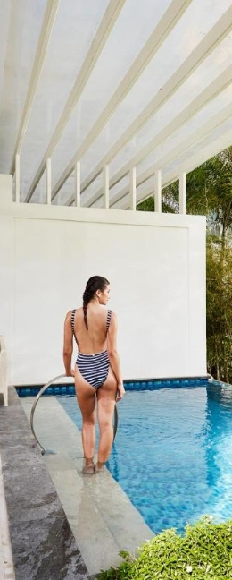

Fridays Boracay
Perfectly positioned on Boracay's eye-catching White Beach, Fridays Boracay is a 48 room-AAA resort offering services such as
Dry cleaning, Laundry service, Ironing service, Massages, Airport Transportation, and Children activities to create the perfect vacation for the customers.
White Beach, Station 1, Malay, 5608 Aklan
+63 (02) 9766 7003
0955 288 6200
info@fridaysboracay.com
Location: White Beach, Station 1, Malay, 5608 Aklan
Transportation: From Caticlan Airport, you need to ride a van to the Caticlan Jetty Port then ride a boat to Boracay Jetty Port. Another 30 to 45 minutes of travel via van or tricycle will bring you to the luxury beachfront villas of Fridays Boracay Resort.
Rates: ₱5,497 - ₱14,396 (Based on Average Rates for a Standard Room)
“My parents were in Manila from the United States, so I took them to Boracay for a relaxing vacation. I was a little apprehensive about sending them go on their own. They had a great night, though, and couldn't say enough good things about Fridays. They adored the resort, the beach, and the helpful, courteous employees. Thank you for providing my parents with a once-in-a-lifetime vacation!”
- Kento Yamazaki
The Lind Boracay

A 5-star resort and spa located at the end of the White Beach's most premium beachfront spot, Station 1. Lind Boracay takes pride in their high quality services and room features, specifically with its 119 well-designed rooms, recognizing the hotel as one of the luxurious hotels in Boracay.
Station 1, Barangay Balabag, Boracay Island, Malay,
Aklan, Yapak, 5608 Boracay, Philippines
+63 (02) 5608 7123
+632 8835 8888
Location: Station 1, Barangay Balabag, Boracay Island, Malay, Aklan, Yapak, 5608 Boracay, Philippines
Transportation: Generally transfers from Caticlan airport go to the port then transfer by sea to Boracay (15 mins). From there its generally a land transfer to your hotel.
Rates: ₱16,592 - ₱48,068
“This was my fourth trip to the Lind, and it was yet another incredible experience. Excellent cuisine and service in the Crust restaurant, as well as a fantastic room with a view of Boracay's famous white beach. The only suggestion I have is that the breakfast buffet be increased. Despite this minor flaw, the Lind is still my first choice for a Boracay hotel.”
- Julian de Mesa
Levantin Boracay
Located along Bulabog Beach, Levantin Boracay is one of the most famous hotels, bars and restaurants in Boracay. It consists of 15 cozy rooms, all equipped with air-conditioning, cable TV, and free WIFI. Boracay’s infamous Bulabog Beach, and D’Mall is only 10 minutes away.
Bulabog Beach, Boracay Island, Malay, 5608 Aklan
(036) 288 2763
09351292711
info@levantinboracay.com
Location: Bulabog Beach, Boracay Island, Malay, 5608 Aklan.
Transportation: Levantin Boracay Resort is easy to access from the airport. In fact, you can even book your airport transfer in advance for greater peace of mind with the additional charge of 1000 PHP. Just use the "Let us know what you need" section of the booking page to let the resort know you want a ride, and they will contact you via the Agoda messaging service.
Rates: ₱1,152 - ₱3,193 (Based on Average Rates for a Standard Room)
“Thank you for your time. Excellent service and a lovely restaurant. Although it is located distant from the main beach, it is still an excellent area to stay while visiting Boracay. I believe the air conditioning is inadequate for such a large room, but the service provided us with an electric fan, so it was alright.”
- Myra Alfon